Bina Laman Web & Hub STEM:
|
Panduan visual langkah demi langkah untuk pendidik membina **Google Sites** sendiri. Kumpulkan, susun, dan paparkan hasil kerja murid, nota STEM, dan bahan AI di satu pusat digital—100% percuma & tanpa pengkodan!
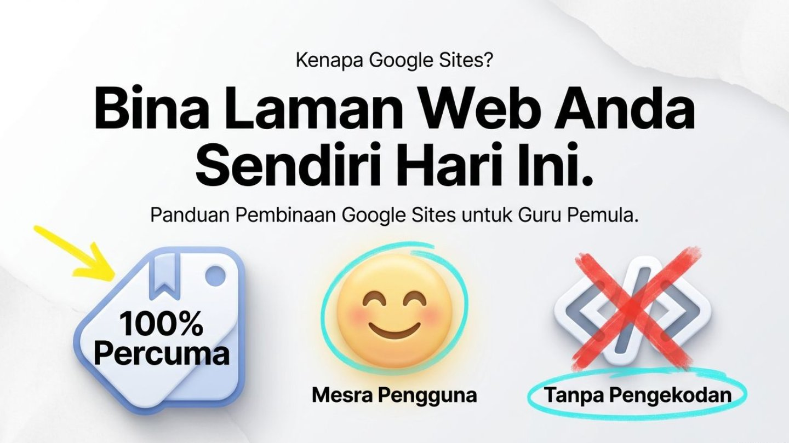
Kenapa Google Sites?
Google Sites ialah platform bina laman web rasmi daripada Google yang direka khusus untuk membolehkan guru dan pelajar membina hab digital interaktif dalam masa beberapa minit.
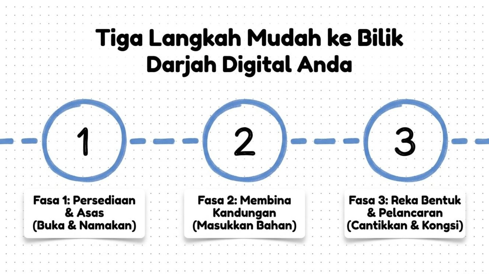
Tiga Langkah Mudah ke Bilik Darjah Digital
Fasa 1: Persediaan & Asas
Buka Google Sites & namakan projek laman web anda.
Fasa 2: Membina Kandungan
Masukkan nota, gambar, video YouTube & borang Google Drive.
Fasa 3: Reka Bentuk & Pelancaran
Cantikkan tema, semak pratonton peranti & kongsi pautan web.
Senarai Semak Pembinaan Google Sites Anda
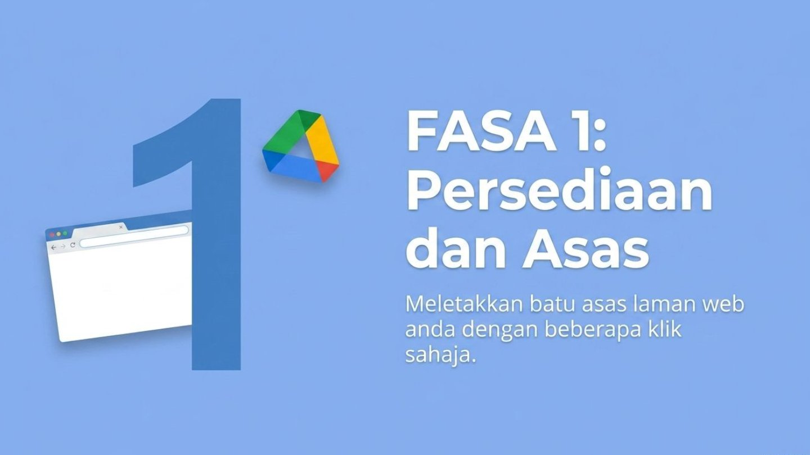
FASA 1: Persediaan & Asas
Meletakkan batu asas laman web anda dengan beberapa klik sahaja.
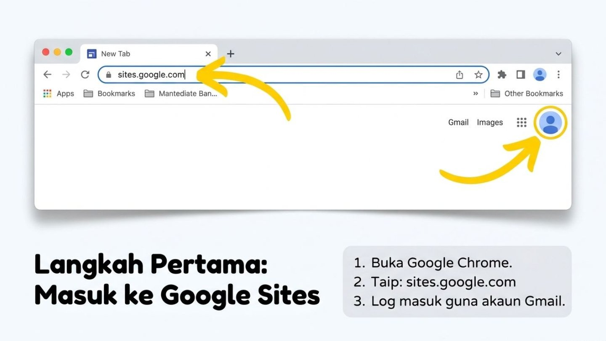
Masuk ke Google Sites
- Buka Google Chrome pada peranti anda.
-
Taip alamat rasmi:
sites.google.com - Log masuk menggunakan akaun Gmail personal atau akaun rasmi DELIMa KPM anda.
Pilih Titik Permulaan Anda
Pilihan A: Mula dari Sifar (Blank site)
Untuk yang kreatif! Rekalah susun atur khas mengikut cita rasa dan kehendak anda sendiri.
Pilihan B: Guna Rekaan Sedia Ada (Template Gallery)
Untuk kerja pantas! Gunakan templat portfolio, kelas, atau projek yang disediakan oleh Google.
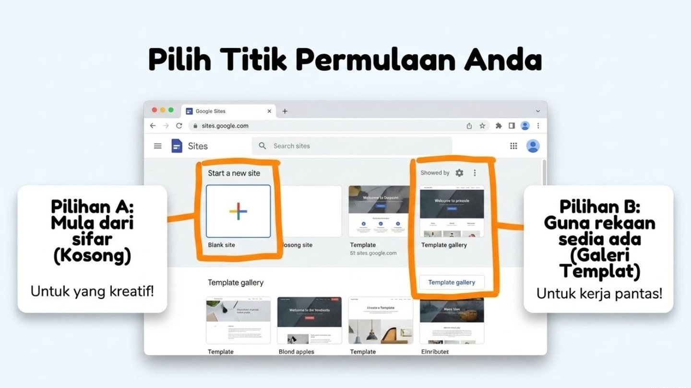
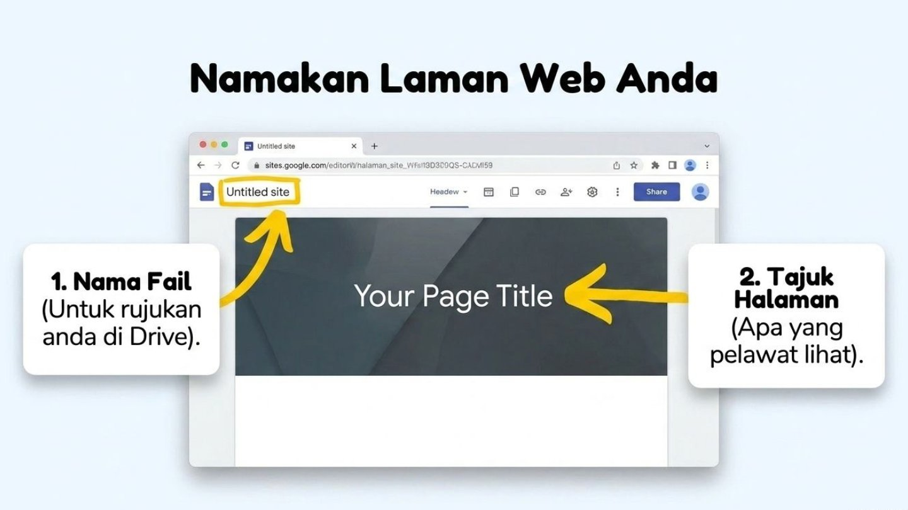
Namakan Laman Web Anda
- 1 Nama Fail (Atas Kiri): Untuk rujukan peribadi anda di Google Drive (contoh: Hub STEM Cikgu Sarah 2026).
- 2 Tajuk Halaman (Banner Utama): Apakah tajuk utama yang dipaparkan dan dilihat oleh pelawat/pelajar anda.
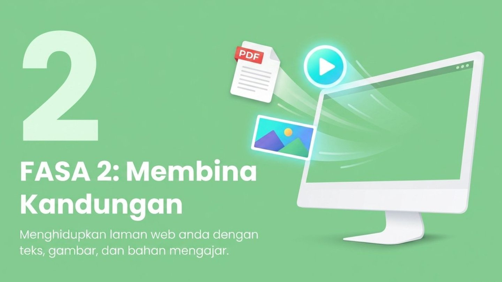
FASA 2: Membina Kandungan
Menghidupkan laman web anda dengan teks, gambar, video, dan bahan mengajar.
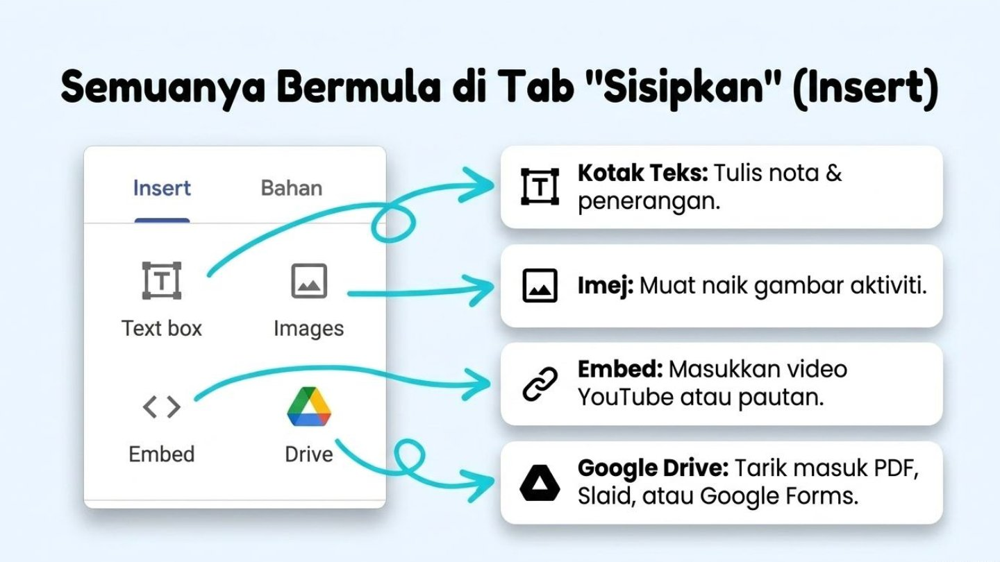
Semuanya Bermula di Tab "Sisipkan" (Insert)
Susun Atur Kemas Tanpa Penat
Biarkan Google menyusun gambar dan teks anda secara automatik menerusi Blok Susun Atur (Layouts). Nampak kemas, profesional, dan menjimatkan masa!
Pilih susun atur 1 Imej & Teks, 2 Imej, 3 Imej atau Jadual di panel kanan dan tarik masuk ke dalam kanvas laman web anda.
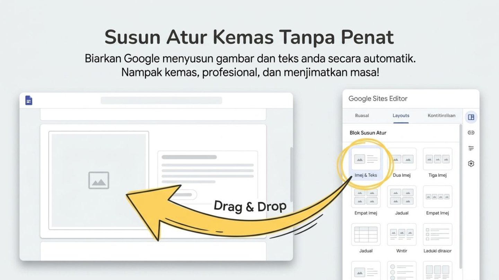
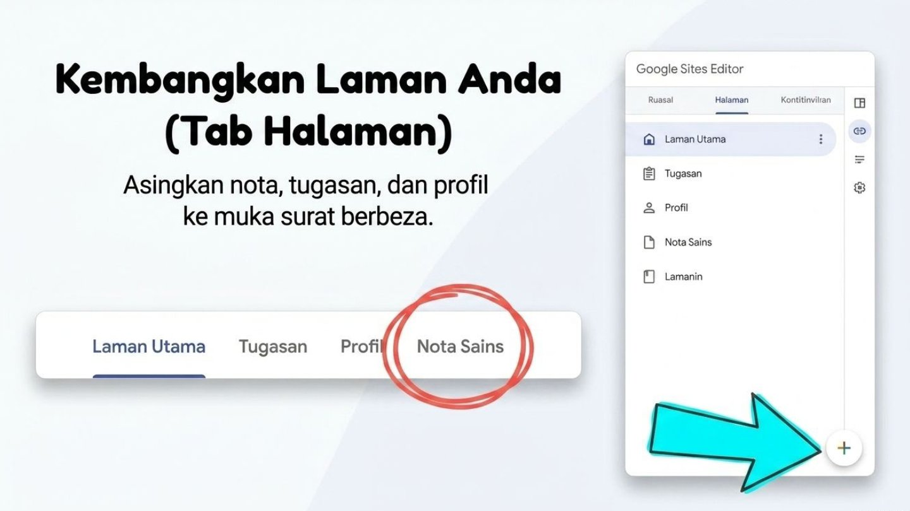
Kembangkan Laman (Tab Halaman / Pages)
Asingkan nota, tugasan, dan profil ke muka surat berbeza supaya maklumat tersusun rapi.
- Tekan butang + (Tambah Halaman Baru) di penjuru bawah tab Halaman.
- Contoh Halaman: Laman Utama, Tugasan Murid, Profil Guru, Nota Sains STEM.
FASA 3: Reka Bentuk & Pelancaran
Sentuhan magis terakhir sebelum berkongsi laman web dengan pelajar dan dunia.
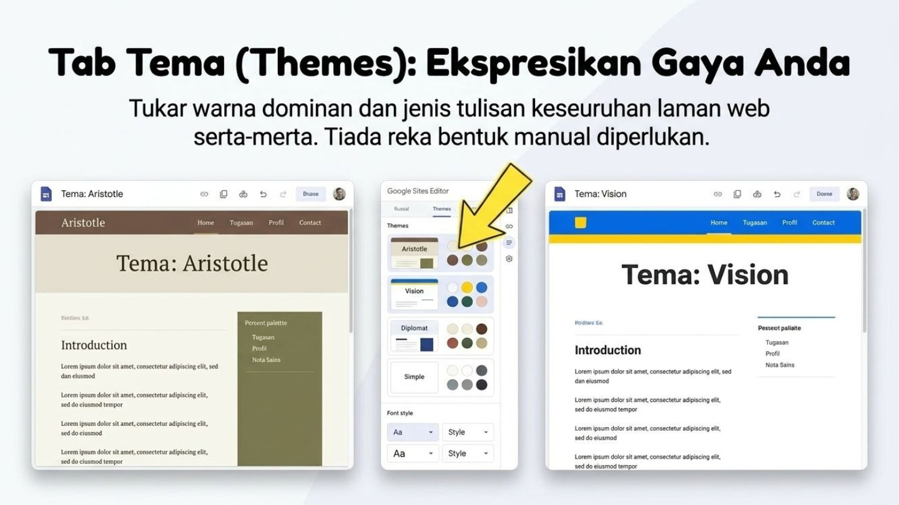
Tab Tema (Themes): Ekspresikan Gaya
Tukar warna dominan dan jenis tulisan keseluruhan laman web serta-merta tanpa perlu menetapkan gaya peranti secara manual.
Pastikan Sempurna di Semua Peranti
Gunakan mod Pratonton (Preview) di bar atas untuk menyemak paparan laman web anda di skrin komputer, tablet, dan telefon pintar pelajar.
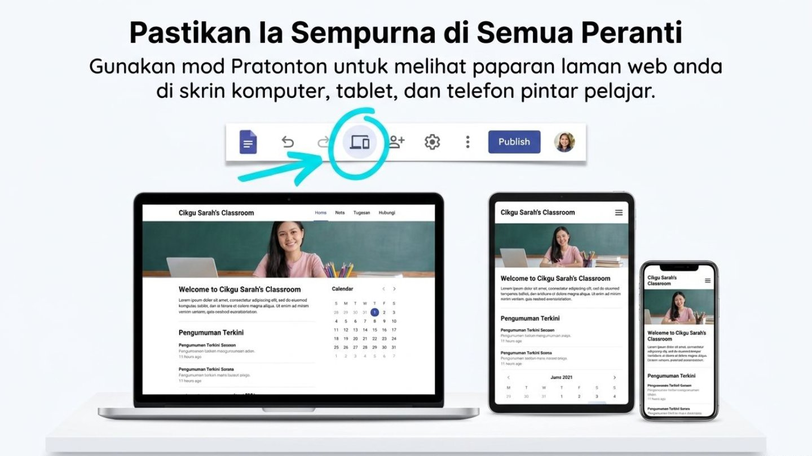
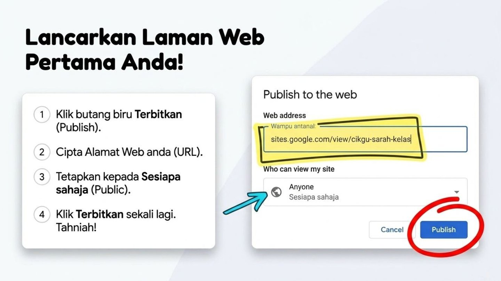
Lancarkan Laman Web Pertama Anda!
- Klik butang biru Terbitkan (Publish) di bahagian atas kanan.
- Cipta Alamat Web (URL) peribadi anda (cth:
cikgu-sarah-kelas). - Tetapkan kebenaran paparan kepada Sesiapa sahaja (Public).
- Klik Terbitkan sekali lagi. Tahniah!
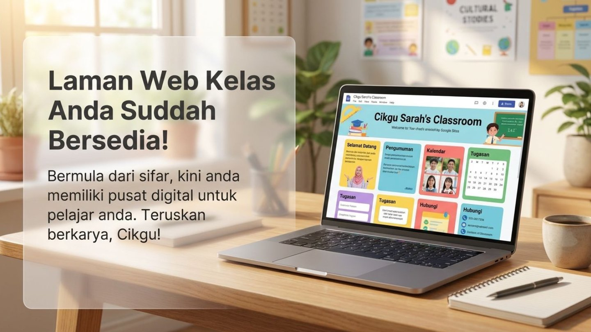
Laman Web Kelas Anda Sudah Bersedia!
Bermula dari sifar, kini anda memiliki pusat digital lengkap untuk menyusun bahan pengajaran STEM dan hasil inovasi pelajar anda. Teruskan berkarya, Cikgu!
Integrasi Pintar STEM & AI dalam Google Sites
Borang Kuiz AI (Google Forms)
Jana soalan kuiz STEM menggunakan Generatif AI (Gemini), masukkan ke Google Forms, dan embed borang tersebut secara terus ke halaman Tugasan Site anda!
Galeri Visual AI (Poster/Infografik)
Bina imej rajah Sains & poster STEM melalui modul Visual AI dan paparkan di bahagian Layouts 3 Imej Google Sites anda.
Video Pengajaran AI Avatar
Hasilkan video avatar pengajaran dengan Video AI, muat naik ke YouTube dan sertamuka (embed) video tersebut di halaman utama Site anda!